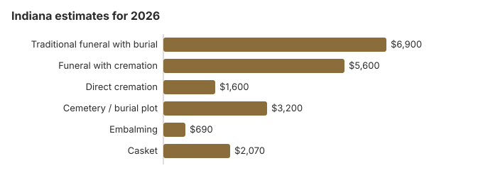

Funeral Costs in Indiana: What Families Pay in 2026
An Indiana funeral can cost as little as about $1,600 for a direct cremation or as much as $8,970 for a full traditional service with burial. Our 2026 estimate for the traditional service is $6,900, 17% under the $8,300 national median, and 48% of Indiana families now choose cremation. Prices are not standardized, so the first home you call shapes the bill more than anything else; this page also covers Indiana death certificates, township burial help and the rules that apply here.
What Each Part of an Indiana Funeral Costs
These are our item estimates for Indiana; the Professional Licensing Agency licenses homes here but does not set what they charge.
| Item | Estimate | Typical range |
|---|---|---|
| Traditional funeral with burial | $6,900 | $5,175 – $8,970 |
| Funeral with cremation | $5,600 | $4,480 – $7,280 |
| Direct cremation | $1,600 | $1,120 – $2,240 |
| Cemetery / burial plot | $3,200 | $1,600 – $6,400 |
| Embalming | $690 | $500 – $1,500 |
| Casket | $2,070 | $690 – $5,520 |
About these figures: they are modeled estimates for Indiana, not prices gathered from local funeral homes, and they are neither a quote nor professional advice. Read how we build them and our disclaimer.
State sources: Indiana Professional Licensing Agency; State Board of Funeral and Cemetery Service; Ind. Code § 12-14-17.

Indianapolis, Fort Wayne and Evansville
Indianapolis prices run higher than the rest of the state; our estimates for the largest Indiana cities:
Township Burial Help in Indiana
Indiana is unusual in leaving burial help for people with no estate to its roughly 1,000 township trustees. When someone dies in a township without money, property or any other way to pay, the trustee must arrange a funeral and burial or a cremation (IC 12-20-16-12). Each township sets its own maximum, may subtract other benefits or money that relatives contribute, and cannot pay more than the funeral home's least expensive funeral on its FTC price list. A trustee may not cremate if the person or a surviving relative objected in writing.
Many townships will only consider a request made before the services take place, usually on the TA-1 application, so a family or funeral director should call the trustee for the township where the death occurred right away.
More on Indiana Cremation and Burial
Each choice has its own page:
Cremation Costs in Indiana
Nearly half of Indiana families, 48%, cremate. Direct cremation starts around $1,600 and a service with cremation around $5,600; the page also covers urns and scattering.
Burial Costs in Indiana
From a plot near $3,200 through casket, vault, marker and opening, an Indiana burial totals $15,550-$20,050.
What Moves Indiana Prices
Indiana sits 17% below the $8,300 national median, and most of the spread inside the state comes from a few things.
Indianapolis homes and cemeteries charge more than those in small towns, and how many homes compete nearby matters as much as anything. With 48% of Indiana families now cremating, direct cremation providers are common enough to keep that price low.
Your Federal Rights in Indiana
Report a breach of the federal rule at ftc.gov; the Funeral Consumers Alliance helps Indiana families without charge.
Indiana Charges to Question
Check an Indiana bill for these.
- Embalming described as mandatory. Indiana has no general embalming law; ask how the body will be kept during the 48-hour cremation wait instead.
Paying for an Indiana Funeral
- Indiana's FSSA funeral help is only for Medicaid recipients, so check the person's Medicaid status before counting on it.
- The $255 Social Security death payment goes only to an eligible surviving spouse or child; in Indiana, as elsewhere, they apply by calling 1-800-772-1213 within two years of the death.
- For an Indiana veteran, the person who covered the funeral bill claims the VA allowance on Form 21P-530EZ: up to $1,032 for burial plus $1,032 for a plot when a non-service-connected death falls on or after October 1, 2026. Eligibility rules for Indiana families are in our veteran burial benefits guide.
- Medicaid, charity and other help are covered in our payment assistance guide and the page on funerals with no money.
Educational Resources
- Funeral Consumers AllianceIndependent nonprofit consumer advocacy for funeral rights
- FTC Funeral RuleThe federal rule protecting funeral consumers
- Funeral Insurance GuideCompare final expense and burial insurance options
- Best Burial Insurance CompaniesSide-by-side comparison of top burial insurance providers
- Payment Assistance GuideGovernment programs and financial help for funeral costs
- Insurance Plan ComparisonCompare coverage, premiums, and payout speed across providers
Compare Funeral Costs
- Average Funeral Cost in 2026National cost breakdown with real prices
- Cremation vs. Burial Cost ComparisonSide-by-side price comparison to help you decide
- Funeral Cost BreakdownEvery line item explained: know what you're paying for
- Cheapest Funeral OptionsLower-cost alternatives, with typical price ranges
- Direct Cremation: Most Affordable OptionNFDA 2023 median $2,645 with a family-supplied container (latest available)
- How to Compare Funeral PricesStep-by-step guide to getting the best price
Indiana: Cremation or Burial
Cremation
- Direct cremation around $1,600
- About $5,600 with a service first
- No grave to buy
- Memorial timing is up to you
- Chosen by 48% of Indiana families
Traditional Burial
- Traditional funeral about $6,900
- Cemetery plot about $3,200
- Most cemeteries want a vault or liner
- A lasting grave to visit
- Metal casket: a national median near $2,500 (NFDA 2023 General Price List Study); Indiana sellers price them differently
Lower-Cost Indiana Choices
| Option | About | Includes |
|---|---|---|
| Direct cremation | $1,600 | Cremation with no viewing or service; Indiana requires a 48-hour wait first (IC 23-14-31-36). |
| Direct burial | $3,450 | No embalming or viewing; the Indiana cemetery charges for the plot and opening separately. |
| Green burial | $3,795 | A shroud or simple casket with no embalming, at an Indiana cemetery that permits it. |
| Cremation + memorial | $5,600 | Cremation now, memorial later |
| Traditional funeral | $6,900 | Viewing, service and burial |
First Steps for an Indiana Funeral
Arranging an Indiana funeral now? These steps save time and money:
- Pick burial or cremation: cremation in Indiana or burial in Indiana.
Indiana death certificates: $8 for the first, $4 for each extra
Indiana law sets the state fee (IC 16-37-1-11). The Indiana Department of Health charges $8 to search for a death record, which includes one certified copy if the record is found, and $4 for every additional copy of the same record ordered at the same time (Indiana Department of Health, order certificates; checked October 29, 2026). The $8 is a search fee and is not refunded if no record turns up.
- By mail: State Form 49606 goes to Vital Records at 2 North Meridian Street in Indianapolis with a check or money order to the Indiana Department of Health and a copy of the front and back of your photo ID. Cash is not accepted, and the state lists about 60 days to process a death certificate.
- By phone or online: orders by card go through a contracted company at 866-601-0891, which adds its own service charge; UPS delivery costs extra.
- Local health departments: the state has no walk-in counter, so for a recent death the county health department where the death happened is usually the faster route. Counties set their own price; Lake County, for one, charges $11 a copy.
At the state rate, five certified copies ordered together cost $24. The funeral home normally orders the first batch while it files the record.
Who licenses Indiana funeral homes, and the help available
The Indiana Professional Licensing Agency licenses funeral directors and establishments in Indiana; call 317-234-3031 to check a license or file a complaint. The agency staffs the State Board of Funeral and Cemetery Service, which also oversees two consumer funds, the Preneed Consumer Protection Fund and the Consumer Protection Fund for Cemetery Maintenance.
Indiana appears on the Funeral Consumers Alliance list of nine states that require a licensed funeral director for part of after-death care, here the removal and transport of the body (Ind. Code § 16-37). Everything else, from washing and dressing the body to a service in the family home, a family may still handle on its own.
A cremation in Indiana cannot take place until 48 hours after death (IC 23-14-31-36), which matters for anyone planning a funeral followed by cremation.
Medicaid funeral claims through FSSA
For an Indiana Medicaid recipient, FSSA pays up to $1,200 toward the funeral and up to $800 toward the cemetery, provided the claim is filed within 90 days of death. (Source: Ind. Code § 12-14-17.)
Veterans cemeteries in Indiana
Marion National Cemetery (765-674-0284) is the only Indiana national cemetery still accepting casket burials. Crown Hill National Cemetery Annex (317-916-5460) and New Albany National Cemetery (502-893-3852) take cremated remains only. The funeral home books any of the three through the VA's National Cemetery Scheduling Office (800-535-1117), while the state's Indiana Veterans Memorial Cemetery (812-273-9220) handles its own requests.
Indiana steps
- Collect itemized price lists from Indiana homes, by phone or in person; under the FTC Funeral Rule you pay only for what you pick.
- Ask directly whether your plans need embalming at all.
- Talk to the Division of Family Resources about an FSSA funeral claim and file it inside 90 days.
- For a veteran, have the home check Marion National Cemetery before you pay for a private plot.
- If a home hides its price list or will not honor it, call the board at 317-234-3031.
Frequently Asked Questions
What does an Indiana funeral cost in 2026?
Expect about $6,900 for a traditional Indiana funeral, 17% under the $8,300 US median. Cremation with a service is about $5,600 and direct cremation from $1,600, and burial adds roughly $3,200 in cemetery costs.
How much less is cremation in Indiana?
Yes. Direct cremation, at about $1,600, comes in some $5,300 under the $6,900 traditional funeral, and about $8,500 under it once roughly $3,200 of cemetery charges is included.
What rights does an Indiana family have?
The federal FTC Funeral Rule gives Indiana families the right to an itemized price list, to prices over the phone, and to buy only the goods and services they want. Indiana law requires a licensed funeral director for removing and transporting the body (Ind. Code § 16-37, per the Funeral Consumers Alliance). Complaints about an Indiana funeral home go to the Indiana Professional Licensing Agency (317-234-3031).
How can an Indiana family spend less?
Township and county cemeteries in Indiana rarely appear in online searches but are often half the price of private cemeteries; call the clerk's office in the county where burial will occur. Independent, family-owned funeral homes still dominate Indiana and tend to price more transparently than chain providers.
Is embalming required by Indiana law?
No. The National Home Funeral Alliance's survey of Indiana law finds no statute or rule that requires embalming or refrigeration, and Indiana's funeral home rules (832 IAC) deal with the embalming room and procedure rather than a holding deadline. Indiana does require a 48-hour wait before cremation unless a health officer waives it (IC 23-14-31-36), so ask how the body will be kept during that time.
Embalming costs about $690 here on this page's estimate. Under the FTC Funeral Rule a funeral home may not charge for embalming you did not approve, except in narrow cases where the law requires it.
Are Indiana funerals below the national average?
Less expensive. Nationally, the NFDA put the 2023 median at $8,300 for a viewing and burial and $6,280 for a funeral followed by cremation, and the Indiana table on this page sits under both; the price lists you gather from local homes still matter more than either median.
What is the lowest-cost Indiana funeral?
Direct cremation, from roughly $1,600. For a burial: Direct burial is the next step up at about $3,450, which is $3,450 below a traditional Indiana funeral.
How do I find a lower-priced Indiana funeral home?
Phone a few Indiana homes; the FTC Funeral Rule obliges them to quote prices over the phone. A casket or urn bought elsewhere must be accepted without any handling fee.